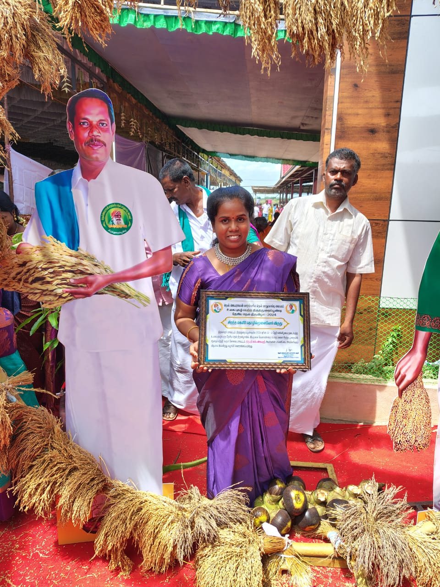
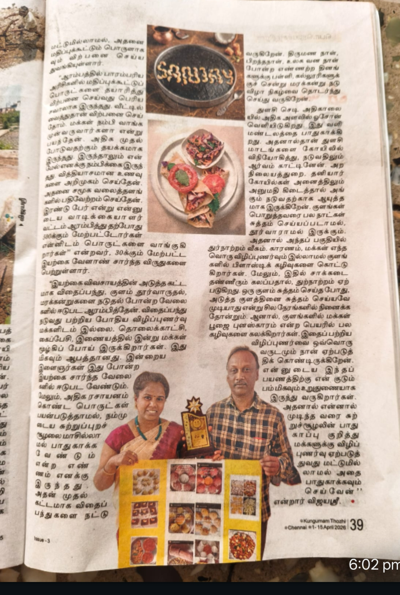
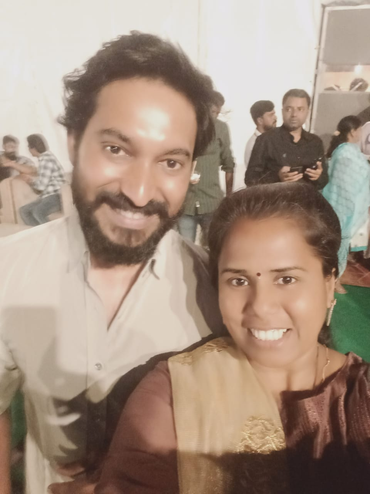
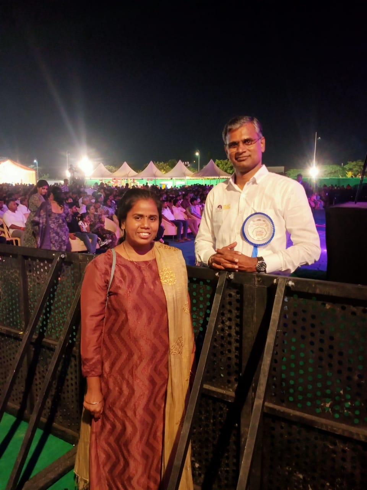

Recognition & Achievement
Honored for contributions towards traditional rice awareness and heritage food preservation at regional agriculture forums.

Award Ceremony
Prestigious community service recognition received for dedication towards promoting traditional and healthy eating habits.

Traditional Rice Festival
Award received for best servicing traditional rice varieties and raising awareness regarding natural, organic farming methods.

Newspaper Highlight
Featured in regional press for expanding organic food reach and making nutrition education accessible to local families.
Special Moments & Public Recognition
Engaging with agricultural leaders and regional groups to expand the heritage grain movement.

Community Recognition
Sharing seeds and agricultural tips with state officials and environmental delegates.

Special Event
Participating in regional organic seed preservation fairs to exchange non-hybridized native grain seeds.

Public Recognition
Honored guests validating our catalog of over 80 traditional rice varieties at food expositions.